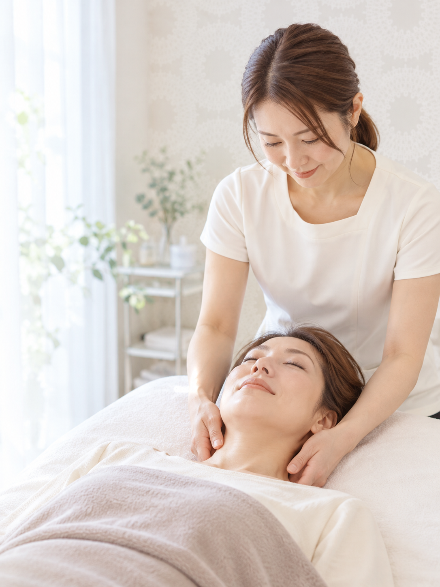
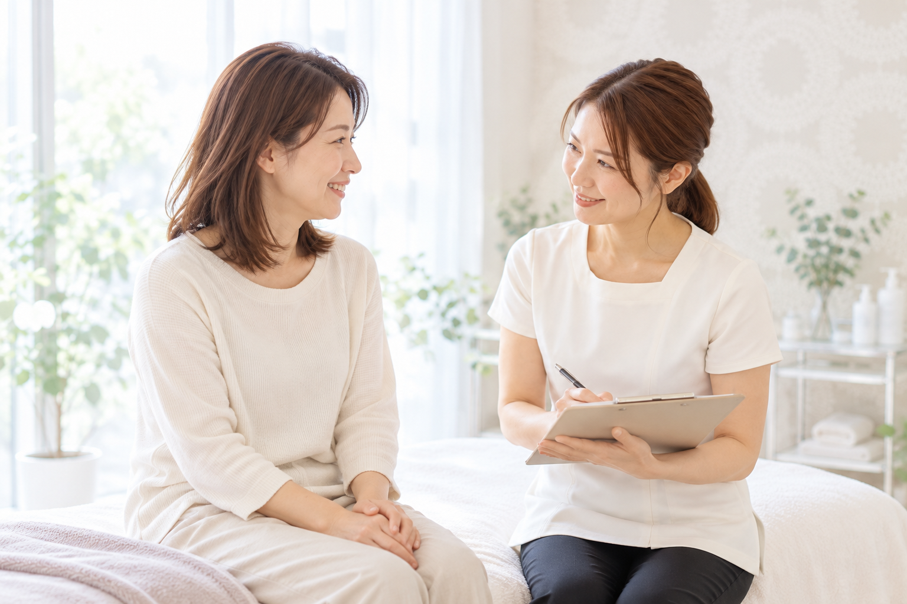
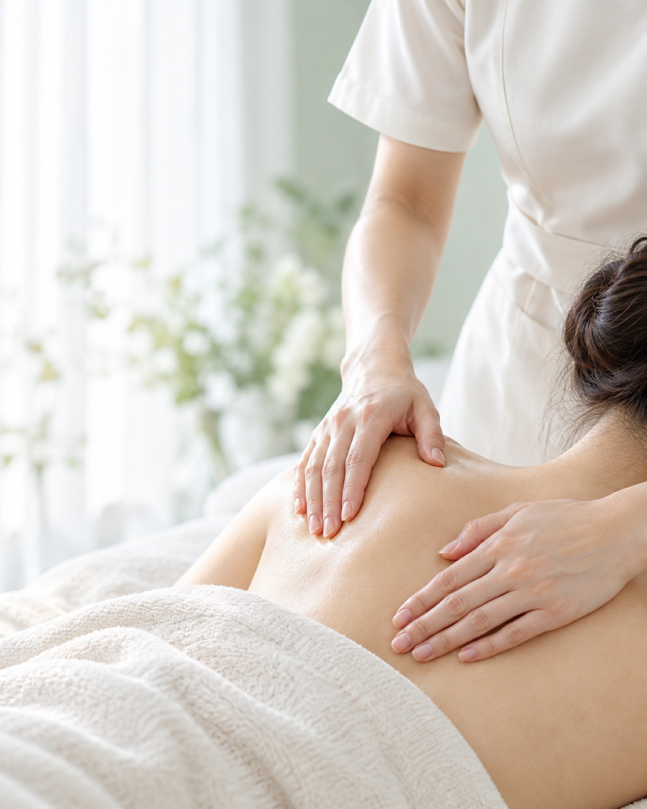
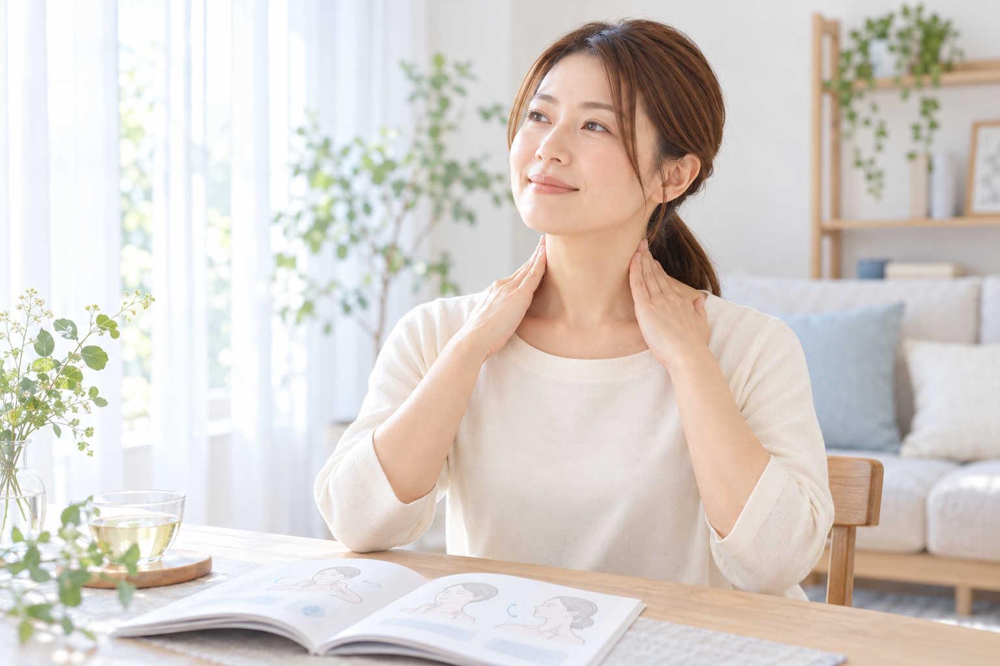
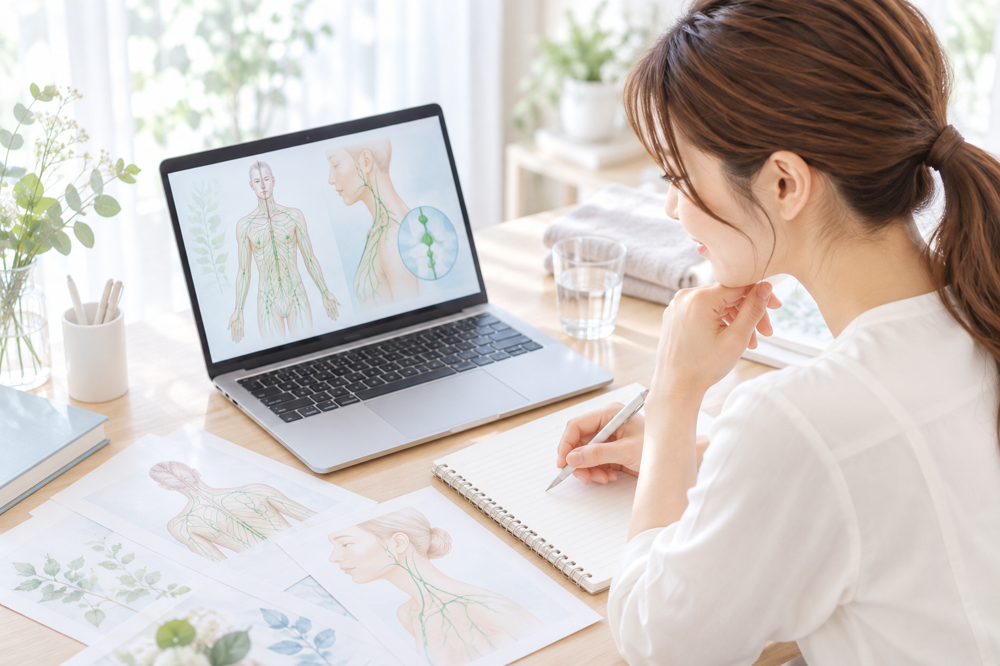
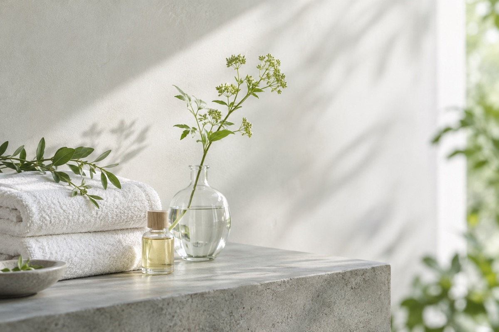
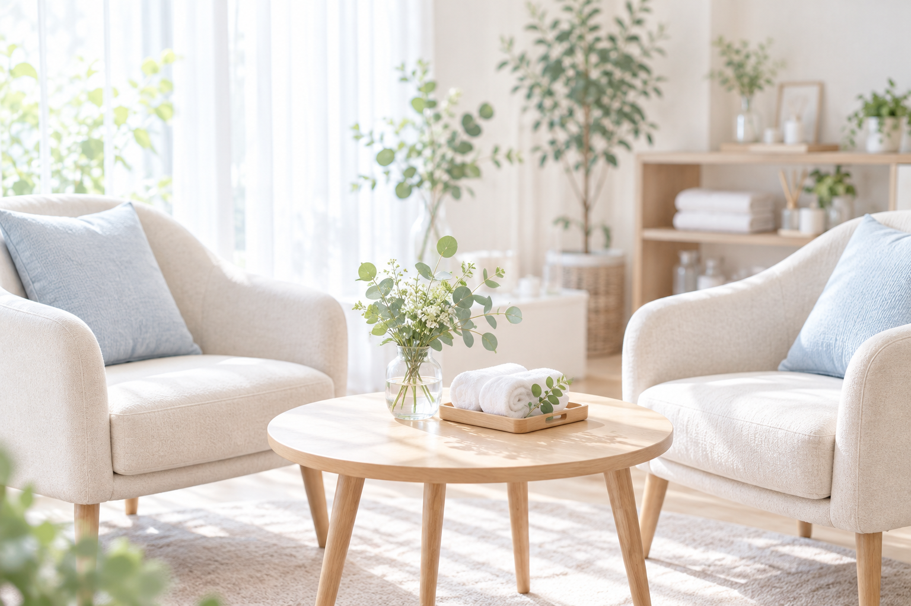

1基礎から、わかりやすく学べる
リンパの仕組みや身体の基礎知識を、初めて学ぶ方にも理解しやすい言葉でお伝えします。セラピストになったばかりの方も、知識を学び直したい方も、基礎から学べます。

知識を、
伝える自信に。
リンパの基礎知識と、プロの接客、カウンセリングを。自分のペースで学び、自信を持ってお客様と向き合えるセラピストへ。
基礎から学べる
リンパの仕組み
不調を理解する
身体の基礎知識
プロの接客と
カウンセリング
不調別の
セルフケア
個別相談無料

今のお悩み
知識がつながらず、
お客様への説明に迷う。
目指す姿
お悩みに合わせて、
わかりやすく説明できるように。
その先には、リピートやご紹介、サロンのサービス向上、将来的な開業・独立など、それぞれの目標があります。
まずは知識と自信を身につけ、お客様によりよいサービスを提供できることを大切にしています。
だから、このスクールでは
基礎知識と「伝え方」を
つなげて学びます。
期間限定・45分・Zoom
無料個別相談に申し込むリンパの仕組みや身体の基礎知識を、初めて学ぶ方にも理解しやすい言葉でお伝えします。セラピストになったばかりの方も、知識を学び直したい方も、基礎から学べます。

サロンを運営し、お客様と向き合ってきた経験をもとに、学んだ知識を実際の接客でどう使うかまで大切にします。お客様のお悩みを理解し、伝える力を育てます。
専門用語を並べるより、
「わかる」と感じてもらえる説明を。
身体の状態やケアの必要性を、わかりやすく説明すること。安心してお悩みを話していただくこと。サロンで信頼関係を築くための接客を、知識とあわせて学びます。

サロンでの時間から、
毎日のセルフケアのご案内へ。
不調別のセルフケア資料を用意しています。お客様のお悩みに合わせた提案や、施術後のご案内にもつながる学びを大切にしています。
わからないことを、
そのままにしない学び方。
講座内容についての質問を、無制限で受け付けています。疑問が出てきたときに質問できる環境で、理解を深めていきましょう。

知識をつなげる土台から、基礎をわかりやすく理解します。
お客様のお悩みを理解するための、身体の考え方を学びます。
知識を、一人ひとりのお悩みと結びつけて考えます。
専門用語に頼りすぎず、お客様に伝わる言葉を学びます。
お客様に寄り添い、信頼の土台をつくる接客を考えます。
サロンの外でも続けていただけるケアのご案内につなげます。

沖縄市「enju by Gracias」オーナー
リンパマッサージを中心に、ヘッドマッサージ、カッピング、小顔筋膜リリースなど、さまざまな技術を学び、サロンワークに取り入れてきました。
施術技術だけでなく、お客様のお悩みを理解すること、身体の状態をわかりやすく説明すること、安心して通い続けていただける関係づくりに力を入れてきました。現在はサロン運営に加え、FCの方へ技術を教える機会もいただいています。
最初から十分な知識があったわけではありません。自分で調べ、学び、実践しながら、少しずつ知識を身につけてきました。
だからこそ、難しい専門用語を並べるのではなく、初めて学ぶ方にも理解しやすい説明を心がけています。
知識だけではなく、お客様のお悩みを理解すること、わかりやすく伝えること、安心して相談していただける接客まで。現場で大切にしてきたことを、これから学ぶ方へお伝えしていきたいと思っています。
enju by Gracias オーナー

こんなに長く通っているのは
enju by Gracias のサロンのお客様より
初めてです
リピーター様を中心にご予約をいただき、ほぼ満席の状態で営業できるようになりました。長く通ってくださるお客様や、ご紹介で来店されるお客様も増えています。
技術とともに、わかりやすい説明や日々の対話を大切にすること。こうした実際のサロン運営から得た経験を、講座でもお伝えします。
基礎知識から、プロの接客、カウンセリングまで
受講期間
3ヶ月
受講料総額
150,000円
自分に合う学び方か、
まずは45分の無料個別相談で。
期間限定・45分・Zoom
無料個別相談に申し込む未経験の方も、すでに活動している方も。今の知識や経験、お客様への説明で迷っている場面などをお聞かせください。
はい。これからセラピストを目指す方にも、リンパの仕組みや身体の基礎知識をわかりやすくお伝えします。
はい。技術は学んだけれど知識や説明に自信がない方、既存サロンのサービスの質を高めたい方にも向けた講座です。
講座内容についての質問は、無制限で受け付けています。質問方法やサポートの詳細は、個別相談でご確認いただけます。
受講期間は3ヶ月、受講料は150,000円です。お支払いなどの詳細は、個別相談でご確認いただけます。
はい。受講を決める前に、今のお悩みや目標に合う内容かを確認するための時間です。まずはお気軽にご相談ください。
目標がまだ曖昧でも、うまく話せなくても大丈夫。
今のお悩みから、一緒に整理していきましょう。
まずは下記の個別相談のボタンから、お申し込みください。
相談日時と、Zoomへの参加方法をご案内します。
今のお悩みや目指したい姿、学び方についてお話しします。
期間限定・45分・Zoom
まずは、今の悩みを話すところから。